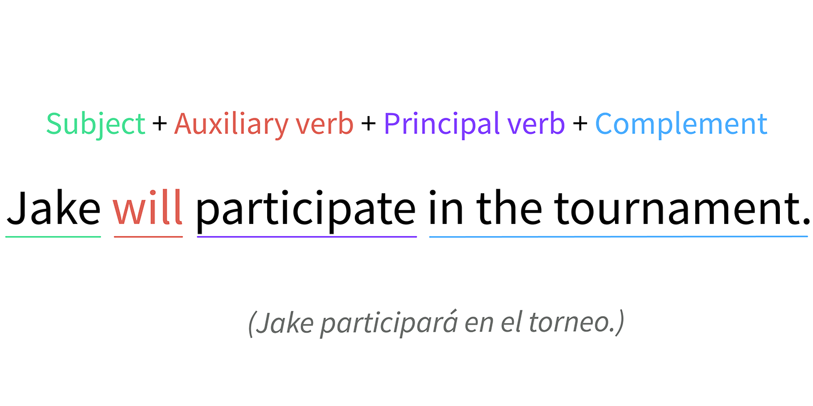

Utilizamos
will para hablar del futuro cuando no estamos muy seguros de lo que va a pasar,
así que decimos lo que creemos que pasará. Por ejemplo: Mi equipo ganará el domingo sería
My team will win on Sunday. Normalmente te encontrarás con will en su forma contraída:
'll. También utilizamos will cuando acabamos de tomar una decisión sobre lo que haremos.
Por ejemplo: Tomaré el pescado sería I’ll have the fish.
La estructura en forma afirmativa para todas las personas es la siguiente:
sujeto + will o 'll + infinitivo sin to, como en I’ll eat meat on Monday (Comeré carne el lunes).
Para la forma negativa usamos won't, que es la forma contraída de will + not: That won’t be necessary
(Eso no será necesario). Y en la interrogativa se coloca will delante del sujeto: Will you go in the morning?
(¿Irás por la mañana?).

La diferencia básica entre estas dos expresiones del futuro: going to se usa para planes,
y will se usa para decisiones espontáneas, previsiones y condicionales.
Luego, por supuesto, la historia se complica un poco.
Las estructuras que tener en cuenta:
°Will se usa con un verbo en infinitivo. “I will see you tomorrow.”
°Going to es más largo: se usa el verbo to be + going to + un verbo en infinitivo.
“I’m going to buy the tickets later.”
°Will tiene su forma corta: I’ll, you’ll, he’ll, she’ll etc.
°Con going to se acorta la forma del verbo to be: I’m going to, you’re going to,
he’s going to, she’s going to etc.
Para mas informacion puedes visitar:
Uso del will
El verbo modal “will” en inglés